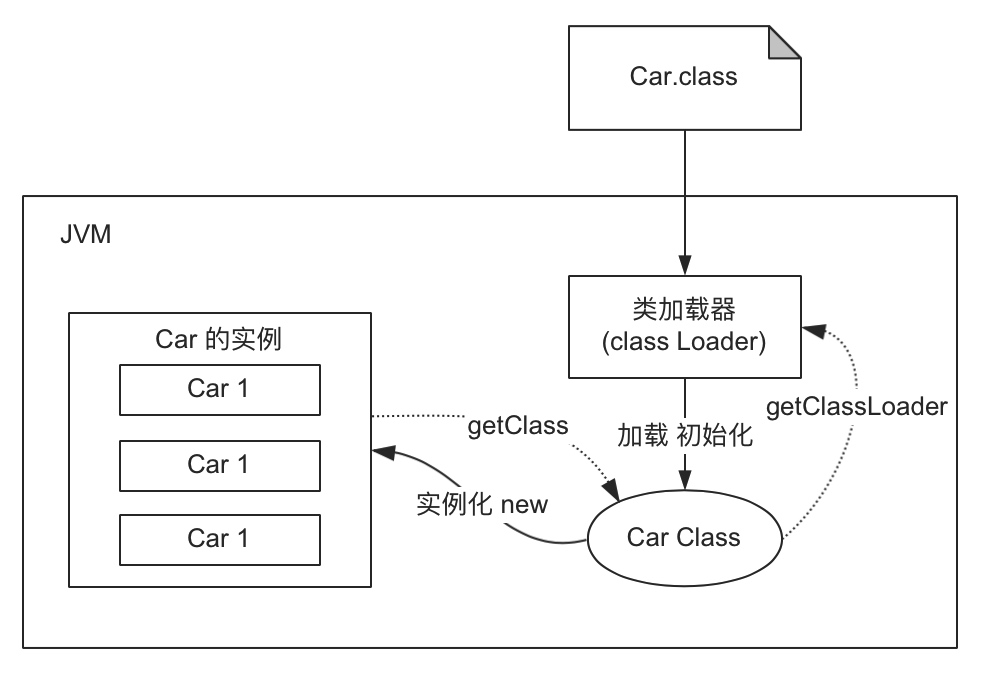

类加载器
作用: 加载 Class 文件 (new Student();), 从jvm角度来看只存在两种类加载器:
- 启动类加载器（
Bootstrap ClassLoader） - 其他类加载器：由Java语言实现，继承自抽象类
ClassLoader- 扩展类加载器（
Extension ClassLoader）: 负责加载<JAVA_HOME>\lib\ext或java.ext.dirs系统变量指定的路径中的所有类库 - 应用程序类加载器（
Application ClassLoader）: 负责加载用户类路径上的指定类库，我们可以直接使用这个类加载器。一般情况，如果我们没有自定义类加载器默认就是用这个加载器。
- 扩展类加载器（
Car car = new Car();
Class c = car.getClass();
System.out.println(c); // class cn.jvm.Car
ClassLoader cl = c.getClassLoader();
System.out.println(cl); // AppClassLoader
System.out.println(cl.getParent()); // ExtClassLoader
System.out.println(cl.getParent().getParent()); // null, BootClassLoader 调用的是 C++ 代码, java 获取不到

类加载机制（对象创建过程）
- 加载 ( Loading ): 将类的
.class文件生成 Class 对象 - 链接 ( Linking ):
- 验证 ( Verify ): 保证这个被加载的class类的正确性
- 准备 ( Prepare ): 为类中的静态字段分配内存，并设置默认的初始值
- 解析 ( Resolve ): 将常量池内的符号引用转换为直接引用的过程
- 初始化 ( initialization ): 执行类的构造器方法
init()
双亲委派机制
如果一个类加载器收到了类加载的请求，它首先不会自己去加载这个类，而是把这个请求委派给父类加载器去完成，每一层的类加载器都是如此 (BOOT <-- EXT <-- APP)，这样所有的加载请求都会被传送到顶层的启动类加载器中，只有当父加载无法完成加载请求（它的搜索范围中没找到所需的类报出 ClassNotFound）时，子加载器才会尝试去加载类. 防止系统类库被恶意替换成用户自定义的类.
例如: 程序员写了一个 java.lang.String 类, 执行加载类的时候, BOOT 加载器会发现 rt.jar 里有 java.lang.String 类, 这时最终加载的类就是 rt.jar 里面的类.
package java.lang;
public class String {
public String toString() {
return "hello, my String !";
}
public static void main(String[] args) {
String s = new String();
s.toString();
}
}
// 错误: 在类 java.lang.String 中找不到 main 方法, 请将 main 方法定义为:
// public static void main(String[] args)
// 否则 JavaFX 应用程序类必须扩展javafx.application.Application
为了完成某些操作，可以 “破坏” 模型。
- 重写
ClassLoader类的loadClass方法 - 利用线程上下文加载器（Thread Context ClassLoader）。这个类加载器可以通过
java.lang.Thread类的setContextClassLoaser()方法进行设置，如果创建线程时还未设置，它将会从父线程中继承一个，如果在应用程序的全局范围内都没有设置过的话，那这个类加载器默认就是应用程序类加载器。 - 为了实现热插拔，热部署，模块化，意思是添加一个功能或减去一个功能不用重启，只需要把这模块连同类加载器一起换掉就实现了代码的热替换。
沙箱安全机制
沙箱安全机制: 将 Java 代码限定在虚拟机 JVM 特定的范围中，严格限制代码对本地资源的访问。
由以下部分组成
- 字节码校验器: 确保 Java 类文件遵循 Java 语言规范
- 类装载器: 防止恶意代码干涉善意代码(双亲委派) / 守护被信任的类库边界 / 确定代码可以进行哪些操作(沙箱)